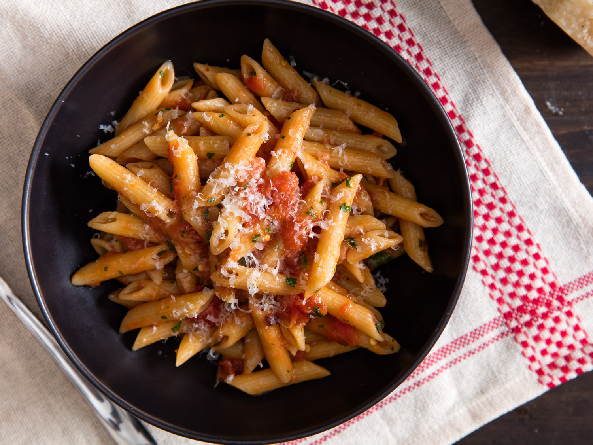

Simply Cooked
Pasta Recipies For Every College Student



Ingredients
- Kosher Salt
- 1 pound (450g) dried spaghetti
- 1/2 cup (120ml) extra-virgin olive oil, divided
- 4 medium cloves garlic, thinly sliced
- Red pepper flakes, to taste (optional)
- Minced flat-leaf parsley, for serving (optional)
- click here for the full recipe
Ingredients
- 6 ounces (170g) elbow macaroni
- Salt
- 6 ounces (180ml) evaporated milk
- 6 ounces (170g) grated mild or medium cheddar cheese, or any good melting cheese, such as Fontina, Gruyère, or Jack
- click here for the full recipe
Ingredients
- Kosher Salt
- 1 pound (450g) dried spaghetti
- 1/2 cup diced guanciale, pancetta, or bacon
- 3 tablespoons (45ml) extra-virgin olive oil, divided
- 2 whole large eggs plus 6 yolks
- 1/4 cup grated Pecorino Romano (about 1 ounce; 25g), plus more for serving
- 1/4 cup grated Parmigiano-Reggiano (about 1 ounce; 25g)
- 1 teaspoon freshly ground black pepper (ground medium-coarse)
- click here for the full recipe
Ingredients
- 5 ounces (140g) grated Parmigiano Reggiano cheese, plus more for sprinkling
- 2 tablespoons (30ml) heavy cream
- 1 large egg
- 1 teaspoon (3g) cornstarch
- 2 tablespoons (30ml) extra-virgin olive oil, plus more for serving
- Kosher salt and freshly ground black pepper
- 1 pound (450g) fresh fettuccine, or 12 ounces (340g) dried fettuccine
- 1 teaspoon minced garlic
- 2 tablespoons (30g) unsalted butter
- click here for the full recipe
Ingredients
- Kosher Salt
- 1 pound (450g) penne pasta
- 3 tablespoons (45ml) extra-virgin olive oil, plus more as desired
- 1 medium clove garlic, crushed
- 1 (15-ounce; 400g) can whole peeled tomatoes, preferably San Marzano, crushed by hand
- 2 ounces (60g) finely grated Parmesan cheese
- click here for the full recipe